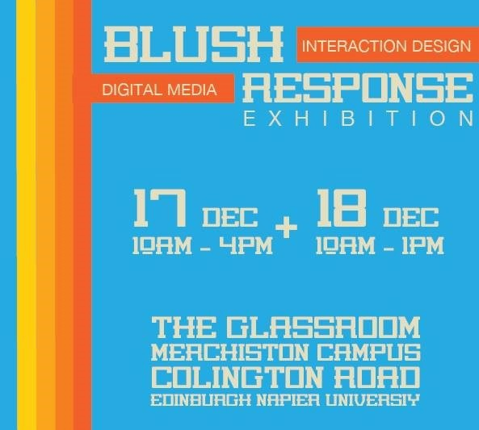
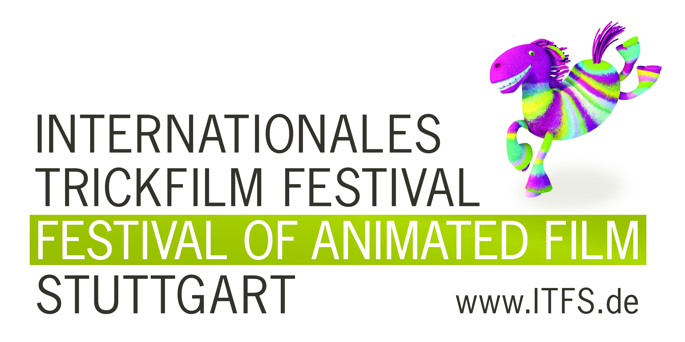
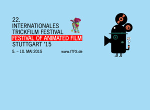

Profile
Committed and confident with excellent communication skills. I excel in presenting a professional manner in my attitude and strive to display a high degree of honesty, loyalty and integrity. In my free time I enjoy Traveling, Photography, Cooking and a little bit of scubadiving.
ITFS
Stuttgart International Trick film festival celebrates the best in the field of Animation. It welcomes over eighty thousand visitors over the course of a week who enjoy over two thousand and five hundred displays, lectures and pieces of work celebrating the art of animation. Over the course of a year I was part of two seperate projects for the Festival. I worked with small teams to develop and produce artifacts that would improve the user journey throughout, and specifically make Festival content accessible to users of all levels.
Addi App - Graphical Prototype
Develop a Graphic Prototype of an interface for the app “Addi”. The app is targeted towards preteen girls as an attempt encourage them to participate in active activities. The girls may be intimidated by excersise and the app should be as non confrontational as possible.


“Blush Response”
This project took place between September and December 2016. Edinburgh Napier University requested a creative computing exhibit to run concurrently with an exhibit of the same name by Creative Scotland.
Guidance APP Gamification Concept
This project took place between October 2015 and Febuary. I worked on this project as User Ecperience Designer For The Hochschule Der Medien Stuttgart in Collaboration With ITFS Stuttgart.
ITFS - Game Zone
This project took place in April 2015. I was part of the Social Media team and collaborated with others as project management. The Game Zone was run by Hochschule Der Median as Part of the ITFS festival.